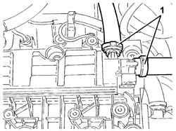
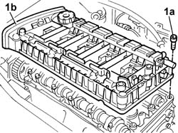
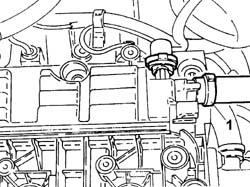

1016A20 SINGLE TAPPET COVER - R.R. AND REPLACE GASKET
- Path
- Procedures > 10 ENGINE > 1016 CYLINDER HEAD(S) > 1016A TAPPET COVERS > 1016A20 SINGLE TAPPET COVER - R.R. AND REPLACE GASKET
- Kind
- repair procedure (removal / refitting; the operation number is the code)
- Applies to
- engines: 2.0 TB, 2.4 20V; all production periods
- Interactive page
- https://sloeber94.github.io/elrnDB-lThss/en/#/90142
Applies to: engines: 2.4 20V; all production periods
 Removing
Removing
 Refitting
Refitting- Make sure that the ignition key is in the OFF position, then disconnect the negative battery terminal.
See in Op. 7040D50 ENGINE COMPARTMENT UPPER SOUND INSULATION SHIELD - R.R.
See in Op. 1016A40 Ignition COIL COVER on cylinder head - R.R.
See in Op. 5510C14 Ignition COILS - R.R.
- Release the wiring for the ignition coils from the fastenings on the tappet cover.
1. Disconnect the engine oil vapour recovery pipes from the tappet cover.

Applies to: engines: 2.4 20V; all production periods
1. Undo the bolts (1a) and remove the tappet cover (1b) complete with gasket.

Applies to: engines: 2.4 20V; all production periods
Refitting
Removing- Position the tappet cover, complete with a new gasket, and secure it tightening the bolts to the recommended torque.
 | Value - daNm | Fastening | Component | Ø |
|---|---|---|---|---|
. | 0.9 | Bolt | CAM COVER | M6 |
- Connect the engine oil vapour recovery pipes to the tappet cover.
See in Op. 5510C14 Ignition COILS - R.R.
See in Op. 1016A40 Ignition COIL COVER on cylinder head - R.R.
See in Op. 7040D50 ENGINE COMPARTMENT UPPER SOUND INSULATION SHIELD - R.R.
- Connect the negative battery terminal.
Applies to: engines: 2.0 TB; all production periods
Removing
Refitting- Make sure that the ignition key is in the OFF position, then disconnect the negative battery terminal.
See in Op. 7040D50 ENGINE COMPARTMENT UPPER SOUND INSULATION SHIELD - R.R.
See in Op. 1016A40 Ignition COIL COVER on cylinder head - R.R.
See in Op. 5510C10 IGNITION COIL/REEL - R and R
- Release the wiring for the ignition coils from the fastenings on the tappet cover.
1. Disconnect the engine oil vapour recovery pipe from the tappet cover.

Applies to: engines: 2.0 TB; all production periods
1. Undo the bolts (1a) and remove the tappet cover (1b) complete with gasket.
Applies to: engines: 2.0 TB; all production periods
Refitting
Removing- Position the tappet cover, complete with a new gasket, and secure it tightening the bolts to the recommended torque.
| Value - daNm | Fastening | Component | Ø |
|---|---|---|---|---|
. | 0.9 | Bolt | CAM COVER | M6 |
- Connect the engine oil vapour recovery pipe to the tappet cover.
See in Op. 5510C10 IGNITION COIL/REEL - R and R
See in Op. 1016A40 Ignition COIL COVER on cylinder head - R.R.
See in Op. 7040D50 ENGINE COMPARTMENT UPPER SOUND INSULATION SHIELD - R.R.
- Connect the negative battery terminal.
Topics linked from this page (4)
- 1016A40 Ignition COIL COVER on cylinder head - R.R.
- 5510C10 IGNITION COIL/REEL - R&R
- 5510C14 Ignition COILS - R.R.
- 7040D50 ENGINE COMPARTMENT UPPER SOUND INSULATION SHIELD - R.R.